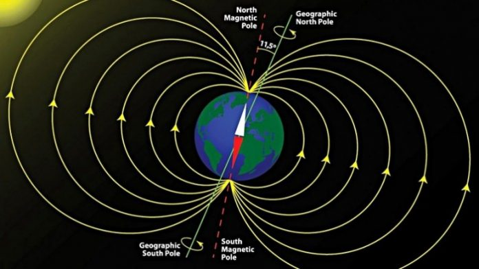

磁力计
磁力计（Magnetic、M-Sensor）也叫地磁、磁感器，可用于测试磁场强度和方向，定位设备的方位，磁力计的原理跟指南针原理类似。掌 控板采用MMC5983MA地磁传感器,测量范围在±5 Gauss高斯,可测量磁感应强度大小和指示方位。
小知识–地磁场
地磁场是源自于地球内部，并延伸到太空的磁场。粗略地说，地磁场是一个与地球自转轴呈11°夹角的磁偶极子，相当于在地球中心放置了一个倾斜了的磁棒。 目前的地磁北极位于北半球的格陵兰附近，实际上它是地磁场的南极，而地磁南极则是地磁场的北极。
地核向外散发热量时，引起外核中熔融铁的对流运动，进而产生电流，地磁场即是此电流所致。这种形成天体磁场的原理，称为发电机理论。
用来衡量磁感应强度大小的单位是特斯拉(Tesla)或者高斯(Gauss) [1Tesla=10000Gauss]。随着地理位置的不同，通常地磁场的强度是250~600毫高斯。
{kind=link}

地磁场分布图
掌控板的磁力计使用
地磁场
地磁场是一个矢量，对于一个固定的地点来说，这个矢量可以被分解为两个与当地水平面平行的分量和一个与当地水平面垂直的分量。 如果保持电子罗盘和当地的水平面平行，那么罗盘中磁力计的三个轴就和这三个分量对应起来，如图2所示。
数学描述
在任何空间点上的地磁场可用一个三维矢量来描述。测量矢量方向的最基本方法，是用指南针判断 磁北极的方向。 该方向与正北方之间的夹角称为“偏角”（D），与地平面之间的夹角则称为“倾角”（I）。磁场的强度（F）与磁铁所受的磁力成正比。另一种描述方法是北（X）、东（Y）、下（Z）坐标。[12]
地球的磁场象一个条形磁体一样由磁北极指向磁南极。在磁极点处磁场和当地的水平面垂直，在赤道磁场和当地的水平面平行，所以在北半球磁 场方向倾斜指向地面。 用来衡量磁感应强度大小的单位是Tesla或者Gauss（1Tesla=10000Gauss）。随着地理位置的不同，通常地磁场的强度是0.4-0.6 Gauss。需要注意的是，磁北极和地理上的北极并不重合，通常他们之间有11度左右的夹角。
地磁场是一个矢量，对于一个固定的地点来说，这个矢量可以被分解为两个与当地水平面平行的分量和一个与当地水平面垂直的分量。 如果保持电子罗盘和当地的水平面平行，那么罗盘中磁力计的三个轴就和这三个分量对应起来，如图所示。
生活中的磁场
罗盘的应用
地磁的北极在地理的南极的附近 地磁的南极在地理的北极的附近 磁体的同名磁极相斥,异名磁极相吸 所以指南针的北极总是指着地理的北极(地磁的南极)
指南针又称指北针，主要组成部分是一根装在 轴上的磁针，磁针在天然地磁场的作用下可以自由转动并保持在磁子午线的切线方向上，磁针的北极指向地理的北极，利用这一性能可以辨别方向。 常用于航海、大 地测量、旅行及军事等方面。物理上指示方向的指南针的发明由三部曲组成：司南、磁针和罗盘。他们均属于中国的发明。